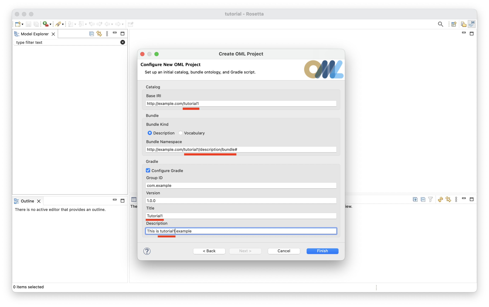
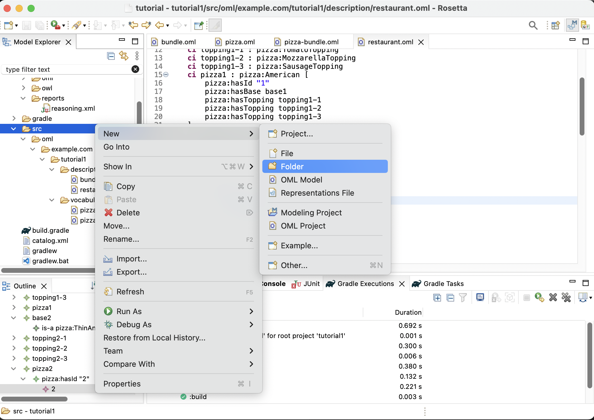
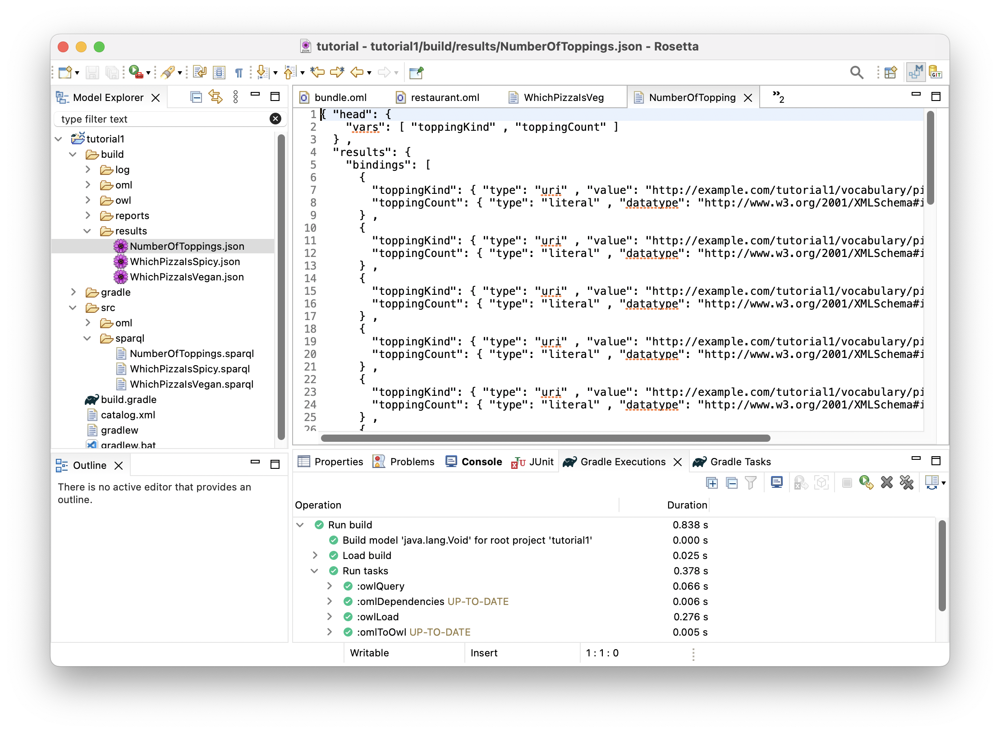
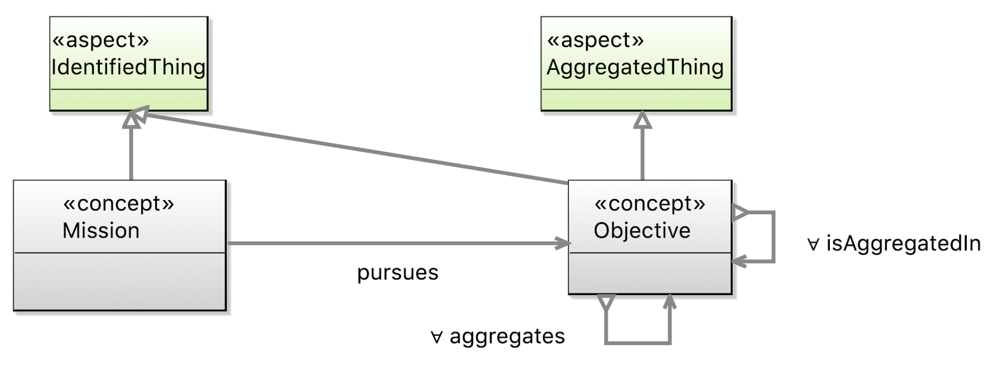
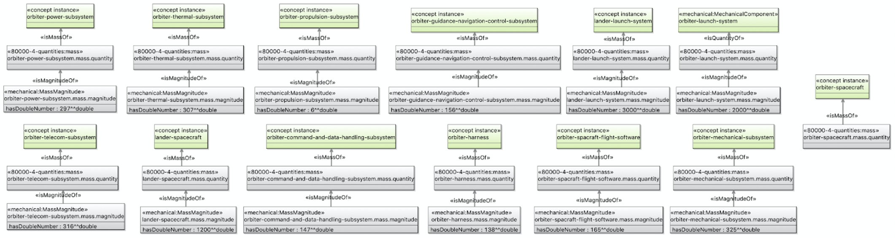
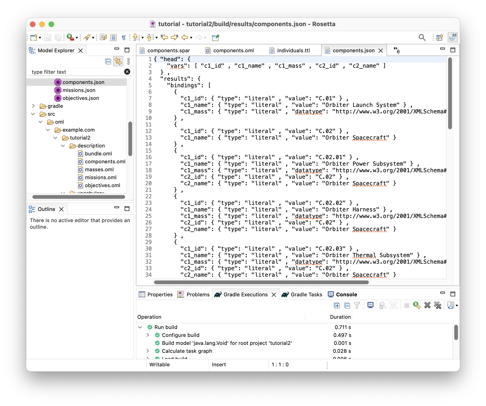
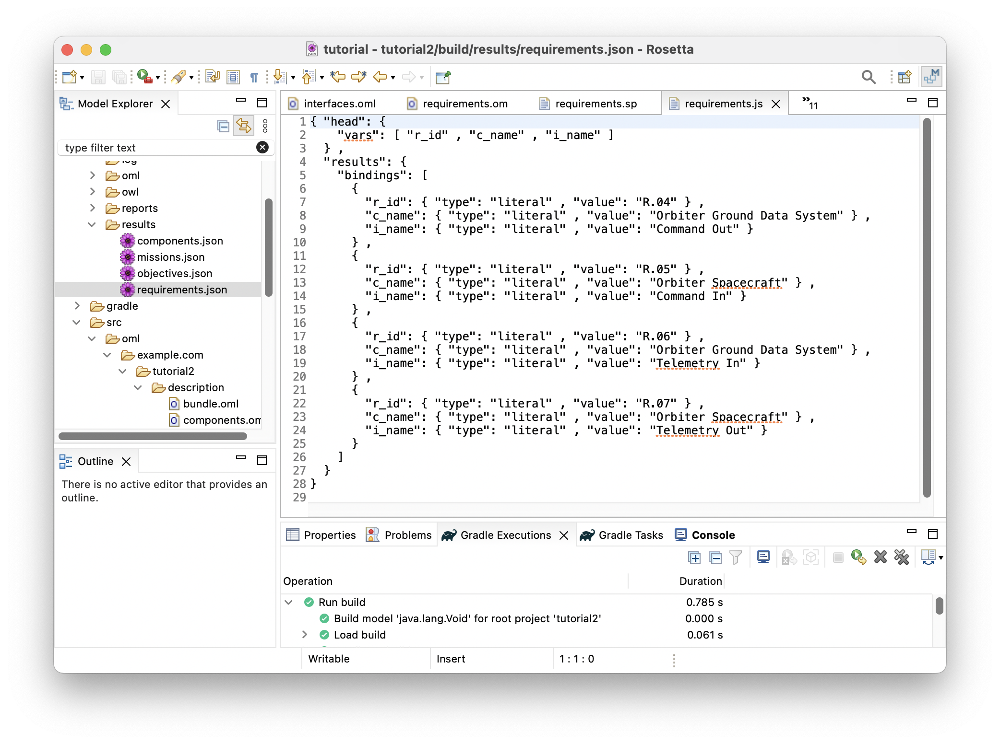

1. Getting Ready
OML has a user-friendly textual grammar that can be edited using a simple text editor. However, for extra support like wizards, syntax highlighting, live validation, and content-assist, a user can use one of the OML editors provided by openCAESAR project. One such editor, called OML Rosetta v1.x, is a plugin to the Eclipse IDE. Another editor, called OML Luxor v1.x, is an extension to the VSCode IDE that can be used in a VSCode desktop client or browser-based client (like Gitpod). In this tutorial, we will demonstrate using the OML Rosetta editor, but the reader can follow using any other editor.
Note: that OML also has a UML-like graphical notation. Although we will not demonstrate how to create them, we will sometimes show OML diagrams to help visualize the models.
Furthermore, OML projects created by openCAESAR are Gradle projects that have OML analysis tools configured as Gradle tasks (in a build.gradle script). A user can choose to invoke such tools from a console/terminal session using the Gradle Wrapper CLI (e.g., ./gradlew <task>). Alternatively, the supported OML editors mentioned above allow invoking those Gradle tasks using a UI. We will demonstrate invoking Gradle tasks from the UI in Eclipse, but the reader can choose to invoke them using the CLI (or another UI) instead.
1.1. Install OML Rosetta
-
Download the 1.4 release of OML Rosetta archive that matches your OS from oml-rosetta.

-
Unzip the archive to some folder on your local drive to get the Rosetta app.
Note: If you’re on a Mac, run this command in the terminal to get around the issue that the app is not yet signed (a temporary issue).
$xattr
- cr< path/ to/ Rosetta. app> -
Navigate to the Rosetta app icon and double click to run it.

-
When prompted to choose a workspace, create a new one in your local file system.

1.2. Run OML Rosetta
-
Once Rosetta opens with the workspace, switch to the Modeling Perspective.
-
Once the Modeling Perspective opens, make some extra views visible.
-
This is how the Modeling Perspective should look like now.

Notice the following components of the Modeling Perspective above:
-
Model Explorer view (top-left): shows your project files hierarchy
-
Properties view (bottom-right): shows detailed propery sheet of the selection
-
Problems view (bottom-right): shows problems (errors, warnings) with your projects
-
Gradle Task view (bottom-right): shows the list of Gradle tasks in your projects
-
Gradle Executions view (bottom-right): shows the details of execution of Gradle tasks
-
Console view (bottom-right): shows messages printed by gradle tasks
-
Editors (top-right): this area shows the open editors (if any)
-
Outline view (bottom-left): shows the outline of content in the active editor
-
Turn on the Show line number preference by navigating to the Preferences dialog in the main menu bar (on a Mac, you will find it under the
Rosettamenu; on Windows, you will find it under theWindowsmenu).
2. Tutorial 1: OML Basics
Note: If you have not already done so, please follow the Getting Ready instructions first before proceeding.
2.1. Learning Objectives
This tutorial provides a quick overview of the basic workflows of OML. Users will learn how to create an OML project, and within it, create a vocabulary for a simple domain (we use a Pizza domain since everyone is familiar with it), then use such vocabulary to describe knowledge (the pizzas sold by some pizza restaurant). Furthermore, users will learn how to build the project to check its logical consistency (e.g., vegetarian pizzas have no meat ingredients), and how to run queries on the described knowledge to answer business questions (e.g., how much ingredients were used? and how many vegan pizzas were sold?).Note: the source files created in this tutorial are available for reference in this repository, but we encourage the reader to recreate them by following the instructions below.
2.2. Create OML Project
-
Right click in the Model Explorer view and select New -> OML Project.
-
Enter the project name as
tutorial1. Press Next. -
Enter the project details as shown below. Press Finish.

-
The
tutorial1project should now be visible in the Model Explorer view.
Note: The project creation process may take a few seconds. Rosetta will show the progress of project creation in the status bar (bottom-right). Wait until this process finishes.
-
Expand the
tutorial1project node in the Model Explorer view as shown in the image below.
2.3. Create OML Vocabulary
Now, you will create a simple vocabulary for describing pizzas along with their bases and toppings. Different kinds of pizzas, bases, and toppings are modeled, along with their properties, interrelations, and restrictions.
-
Right click on the
tutorial1subfolder (highlighted in the picture above) in the Model Explorer view and select New -> OML Model. -
Enter the details of the
pizzavocabulary as shown below. Press Finish.
-
The
pizzavocabulary will be created and its OML editor opens as shown below.
-
Copy the following OML code and paste it as the new content of vocabulary
pizza.
@dc : description "A vocabulary about pizzas" vocabulary < http : //example.com/tutorial1/vocabulary/pizza#> as pizza { extends < http : //www.w3.org/2001/XMLSchema#> as xsd extends < http : //purl.org/dc/elements/1.1/> as dc extends < http : //www.w3.org/2000/01/rdf-schema#> as rdfs // Top Level @rdfs : comment "The class of things that are uniquely identified by id" aspect IdentifiedThing [ key hasId ] @rdfs : comment "The id property of an identified thing" scalar property hasId [ domain IdentifiedThing range xsd : string functional ] // Identified Things @rdfs : comment "The class of food items" concept Food :> IdentifiedThing @rdfs : comment "A relation from a food to another used as an ingredient" relation entity HasIngredient [ from Food to Food forward hasIngredient reverse isIngredientOf transitive ] @rdfs : comment "An enumeration of spiciness levels" enumerated scalar Spiciness [ "Hot" , "Medium" , "Mild" ] @rdfs : comment "The spiciness property of a food item" scalar property hasSpiceness [ domain Food range Spiciness functional ] // Foods @rdfs : comment "The class of pizzas" concept Pizza :> Food [ restricts some relation hasBase to PizzaBase ] @rdfs : comment "The class of pizza bases" concept PizzaBase :> Food @rdfs : comment "The class of pizza toppings" concept PizzaTopping :> Food @rdfs : comment "A relation from a pizza to a base" relation entity HasBase :> HasIngredient [ from Pizza to PizzaBase forward hasBase reverse isBaseOf functional inverse functional ] @rdfs : comment "A relation from a pizza to a topping" relation entity HasTopping :> HasIngredient [ from Pizza to PizzaTopping forward hasTopping reverse isToppingOf inverse functional ] // Pizzas @rdfs : comment "The class of pizzas with some cheese toppings" concept CheesyPizza :> Pizza [ restricts some relation hasTopping to CheeseTopping ] @rdfs : comment "The class of pizzas with some meat toppings" concept MeatyPizza :> Pizza [ restricts some relation hasTopping to MeatTopping ] @rdfs : comment "The class of pizzas with all vegetarian toppings" concept VegetarianPizza :> Pizza [ restricts all relation hasTopping to VegetarianTopping ] @rdfs : comment "The class of American pizzas" concept American :> CheesyPizza , MeatyPizza [ restricts some relation hasTopping to MozzarellaTopping restricts some relation hasTopping to SausageTopping restricts some relation hasTopping to TomatoTopping ] @rdfs : comment "The class of Veneziana pizzas" concept Veneziana :> CheesyPizza , MeatyPizza [ restricts some relation hasTopping to MozzarellaTopping restricts some relation hasTopping to TomatoTopping restricts some relation hasTopping to SultanaTopping ] @rdfs : comment "The class of Margherita pizzas" concept Margherita :> CheesyPizza , VegetarianPizza [ restricts some relation hasTopping to MozzarellaTopping restricts some relation hasTopping to TomatoTopping ] // Pizza Bases @rdfs : comment "The class of deep pan bases" concept DeepPanBase :> PizzaBase @rdfs : comment "The class of thin and crispy bases" concept ThinAndCrispyBase :> PizzaBase // Pizza Toppings @rdfs : comment "The class of meat toppings" concept MeatTopping :> PizzaTopping @rdfs : comment "The class of vegetarian toppings" concept VegetarianTopping :> PizzaTopping @rdfs : comment "The class of hot spiciness toppings" concept HotTopping :> PizzaTopping [ restricts scalar property hasSpiceness to "Hot" ] @rdfs : comment "The class of medium spiciness toppings" concept MediumTopping :> PizzaTopping [ restricts scalar property hasSpiceness to "Medium" ] @rdfs : comment "The class of mild spiciness toppings" concept MildTopping :> PizzaTopping [ restricts scalar property hasSpiceness to "Mild" ] // Meat Topping @rdfs : comment "The class sausage toppings" concept SausageTopping :> MeatTopping , MildTopping @rdfs : comment "The class spiced beef toppings" concept SpicedBeefTopping :> MeatTopping , HotTopping // Vegetarion Toppings @rdfs : comment "The class sauce toppings" concept SauceTopping :> VegetarianTopping @rdfs : comment "The class cheese toppings" concept CheeseTopping :> VegetarianTopping @rdfs : comment "The class fruit toppings" concept FruitTopping :> VegetarianTopping @rdfs : comment "The class vegetable toppings" concept VegetableTopping :> VegetarianTopping // Sauce Toppings @rdfs : comment "The class of tabasco toppings" concept TobascoTopping :> SauceTopping , HotTopping // Cheese Toppings @rdfs : comment "The class of parmesan toppings" concept ParmesanTopping :> CheeseTopping , MildTopping @rdfs : comment "The class of mozzarella toppings" concept MozzarellaTopping :> CheeseTopping , MildTopping // Fruit Toppings @rdfs : comment "The class of sultana toppings" concept SultanaTopping :> FruitTopping , MediumTopping // Vegetable Toppings @rdfs : comment "The class of pepper toppings" concept PepperTopping :> VegetableTopping @rdfs : comment "The class of tomatoe toppings" concept TomatoTopping :> VegetableTopping , MildTopping // Pepper Toppings @rdfs : comment "The class of jalapeno pepper toppings" concept JalapenoPepperTopping :> PepperTopping , HotTopping @rdfs : comment "The class of sweet pepper toppings" concept SweetPepperTopping :> PepperTopping , MildTopping }
2.4. Create OML Vocabulary Bundle
Now, you will create a vocabulary bundle to enable logical closed-world reasoning on pizzas described using the pizza vocabulary. This automatically asserts that classes in the bundled vocabularies that do not have common subtypes are disjoint (have no intersection), which helps detect a wide class of errors that would otherwise not get detected due to the open-world assumption (whatever is not asserted may be true or false).
-
Right click on the
vocabularysubfolder in the Model Explorer view and select New -> OML Model. -
Enter the details of the
pizza-bundlevocabulary bundle as shown below. Press Finish.
-
The
pizza-bundlevocabulary bundle will be created and its OML editor opens as shown below.
-
Copy the following OML code and paste it as the new content of the vocabulary bundle.
@dc : description "A vocabulary bundle for closed-world reasoning about pizzas" vocabulary bundle < http : //example.com/tutorial1/vocabulary/pizza-bundle#> as pizza-bundle { includes < http : //purl.org/dc/elements/1.1/> as dc // The pizza vocabulary bundle "includes" the pizza vocabulary includes < http : //example.com/tutorial1/vocabulary/pizza#> }
2.5. Create OML Description
Now, you will create a description of the pizza instances baked by a particular pizza restaurant. The description will be done using terms from the pizza vocabulary above.
-
Right click on the
descriptionsubfolder in the Model Explorer view and select New -> OML Model. -
Enter the details of the
restaurantdescription as shown below. Press Finish.
-
The
restaurantdescription will be created and its OML editor opens as shown below.
-
Copy the following OML code and paste it as the new content of the description.
@dc : description "A description of the sales of a specific pizza restaurant" description < http : //example.com/tutorial1/description/restaurant#> as restaurant { uses < http : //purl.org/dc/elements/1.1/> as dc // The restaurant description "uses" the pizza vocabulary terms in assertions uses < http : //example.com/tutorial1/vocabulary/pizza#> as pizza // Pizza 1 ci base1 : pizza : DeepPanBase ci topping1 - 1 : pizza : TomatoTopping ci topping1 - 2 : pizza : MozzarellaTopping ci topping1 - 3 : pizza : SausageTopping ci pizza1 : pizza : American [ pizza : hasId "1" pizza : hasBase base1 pizza : hasTopping topping1 - 1 pizza : hasTopping topping1 - 2 pizza : hasTopping topping1 - 3 ] // Pizza 2 ci base2 : pizza : ThinAndCrispyBase ci topping2 - 1 : pizza : TomatoTopping ci topping2 - 2 : pizza : MozzarellaTopping ci topping2 - 3 : pizza : SausageTopping ci pizza2 : pizza : American [ pizza : hasId "2" pizza : hasBase base2 pizza : hasTopping topping2 - 1 pizza : hasTopping topping2 - 2 pizza : hasTopping topping2 - 3 ] // Pizza 3 ci base3 : pizza : ThinAndCrispyBase ci topping3 - 1 : pizza : TomatoTopping ci topping3 - 2 : pizza : MozzarellaTopping ci pizza3 : pizza : Margherita [ pizza : hasId "3" pizza : hasBase base3 pizza : hasTopping topping3 - 1 pizza : hasTopping topping3 - 2 ] // Pizza 4 ci base4 : pizza : ThinAndCrispyBase ci topping4 - 1 : pizza : TomatoTopping ci topping4 - 2 : pizza : MozzarellaTopping ci topping4 - 3 : pizza : SultanaTopping ci topping4 - 4 : pizza : SpicedBeefTopping ci pizza4 : pizza : Veneziana [ pizza : hasId "4" pizza : hasBase base4 pizza : hasTopping topping4 - 1 pizza : hasTopping topping4 - 2 pizza : hasTopping topping4 - 3 pizza : hasTopping topping4 - 4 ] // Pizza 5 ci base5 : pizza : DeepPanBase ci topping5 - 1 : pizza : TobascoTopping ci topping5 - 2 : pizza : ParmesanTopping ci topping5 - 3 : pizza : JalapenoPepperTopping ci pizza5 : pizza : VegetarianPizza [ pizza : hasId "5" pizza : hasBase base5 pizza : hasTopping topping5 - 1 pizza : hasTopping topping5 - 2 pizza : hasTopping topping5 - 3 ] // Pizza 6 ci base6 : pizza : DeepPanBase ci topping6 - 1 : pizza : TomatoTopping ci topping6 - 2 : pizza : JalapenoPepperTopping ci pizza6 : pizza : VegetarianPizza [ pizza : hasId "6" pizza : hasBase base6 pizza : hasTopping topping6 - 1 pizza : hasTopping topping6 - 1 ] }
2.6. Edit OML Description Bundle
Now, you will include the restaurant description in a description bundle that will be analyzed as a dataset with closed-world assumptions. This requires the description bundle to use the pizza vocabulary bundle above in order to reuse its closed world assumptions. Additionally, it automatically asserts that instances in the bundled descriptions are the only ones available in the world.
-
Double-click on the
description/bundle.omlfile in the Model Explorer view to open the editor (if not already open).
-
Copy the following OML code and paste it as the new content of description bundle.
@dc : description "A description bundle for closed-world reasoning about a restaurant" description bundle < http : //example.com/tutorial1/description/bundle#> as ^bundle { uses < http : //purl.org/dc/elements/1.1/> as dc // The description bundle "uses" the vocabulary bundle world closure axioms uses < http : //example.com/tutorial1/vocabulary/pizza-bundle#> // The description bundle "includes" the restaurant description includes < http : //example.com/tutorial1/description/restaurant#> }
2.7. Run Build Task
Now, it is time to run the Gradle build task of the project to verify whether the description bundle is logically consistent (and uses vocabulary bundles that have satisfiable classes). The OML code we have so far should pass this test.
-
Click on the Gradle Task view and wait until the
tutorial1project shows up there (keep an eye on the loading message in the status bar bottom-right).
-
Expand the
tutorial1node followed by expanding theomlnode. -
Double-click on the
buildtask and wait for it to finish running in the Gradle Executions view.
-
Inspect the build status in the Gradle Executions view and notice that it is all green icons.

2.8. Fix Logical Inconsistency
Now, we will introduce a logical problem in the OML code above and see how the reasoner helps us detect it and explain it.
Introducing a problem
-
Click on the
restaurant.omleditor to bring it in focus. -
In line 30, change the
hasIdproperty value of instancepizza2to "1" (from "2"), to become similar to the value ofhasIdof instancepizza1(in line 16). Save the editor.
-
In the Gradle Task view double-click to rerun task
tutorial1/oml/buildagain, and wait for it to finish running in the Gradle Executions view. -
Inspect the build status in the Gradle Executions view and notice that it now shows a failure (red icons) on task
owlReason.
-
Right click on the
Execute run for :owlReasonred icon and selectShow Failuresfrom the context menu. The follow dialog shows up saying that some "Ontology is inconsistent. Check tutorial1/build/reports/reasoning.xml for more details". Click Close button.
-
In the Model Explorer view, right click on the
tutorial1project and choose Refresh. Then, navigate to fileorial1/build/reports/reasoning.xmland double click on it. The file opens in theJunitview showing the problem as an inconsistency (on the left), and providing an explanation for it (on the right).
Explaining the problem
This problem demonstrates why it is useful to use a logical reasoner to detect inconsistencies that may otherwise be non-obvious or unexpected. When this occurs, the reasoner provides a brief description and a minimal ontology that demonstrates the problem.
In this case, the brief description is "an individual belongs to a type and its complement". This means there exists an individual (called an instance in OML) in the model that can be inferred, using the logical semantics of the used vocabulary, to be classified by two classes that are disjoint (i.e., do not have an intersection, or in other words are a complement of each other, hence cannot be types of the same instance).

Looking at the minimal ontology presented, we can figure out the cause of the problem. It says that relation hasBase is functional, meaning that it can have maximum one value for a given instance. Looking at the relevant snippet of the pizza vocabulary confirms that.
@rdfs : comment "A relation from a pizza to a base" relation entity HasBase :> HasIngredient [ from Pizza to PizzaBase forward hasBase reverse isBaseOf functional inverse functional ]
Moreover, it says that instance base1 is a value of property hasBase on instance pizza1, and instance base2 is a value of property hasBase on instance pizza2. Looking at the relevant snippet of the restaurant description confirms that.
ci base1 : pizza : DeepPanBase ci pizza1 : pizza : American [ pizza : hasId "1" pizza : hasBase base1 ] ci base2 : pizza : ThinAndCrispyBase ci pizza2 : pizza : American [ pizza : hasId "1" pizza : hasBase base2 ]
So far so good, where is the issue then?
The explanation highlights that pizza1 and pizza2 have the same value ("1") of property hasId, which is defined by the pizza vocabulary to be functional (can have a maximum one value per instance). It infers from this that pizza1 and pizza2 are two names of a single pizza instance.
scalar property hasId [ domain IdentifiedThing range xsd : string functional ]
In light of the above, and having established previously that property hasBase is functional, it follows logically that base1 and base2 must be two names of the same base individual. But, wait, we asserted in the restaurant description that those instances are typed by concepts DeepPanBase and ThinAndCrispyBase, respectively. This means now that the same base instance is typed by both these types.
However, the explanation also says that these two types are in fact disjoint. Where did it get this from? It turns out to be a generated assertion in the pizza-bundle vocabulary bundle. Such assertion is generated since the two types do not have a common subtype in the pizza vocabulary (included in the vocabulary bundle). Such closed-world semantics is a benefit of using a vocabulary bundle.
Now, let us put all those inferences together to understand the reported problem "an individual belongs to a type and its complement". It turns out that the individual here is known by the two names base1 and base2 and it is inferred to belong to type DeepPanBase and its complement type ThinAndCrispyBase, which is a logical inconsistency.
Fixing the problem
-
Let’s now fix the problem by reverting the change we just did. Click on the
restauranteditor again and navigate to line 30 and restore the originalhasIdproperty value ofpizza2to "2". Save the editor. -
Click on the Gradle Task view and double-click to rerun the
tutorial1/oml/buildtask again and wait for it to finish running in the Gradle Executions view. -
Inspect the build status in the Gradle Executions view and notice that it is back to showing green icons.
2.9. Run Query Task
Now that the model is consistent, it is time to get some value out of it by using it to answer business questions. To do that, we will run some queries in SPARQL on the model and inspect their results.
-
Navigate in the Model Explorer view to the
srcfolder, and right click on it and choose New -> Folder.
-
Enter the name of the folder as
sparqland press Finish. This creates a new foldersrc/sparqlin the Model Explorer view.
-
Right click on the
src/sparqlfolder in the Model Explorer view and select New -> File.
-
Enter the name of the file as
NumberOfToppings.sparqland press Finish. This creates a new file under thesparqlfolder in the Model Explorer view. -
Paste the following SPARQL code as the content of the file editor and save it.
PREFIX pizza : < http : //example.com/tutorial1/vocabulary/pizza#> PREFIX rdfs : < http : //www.w3.org/2000/01/rdf-schema#> SELECT ? toppingKind ( COUNT ( ? topping ) as ? toppingCount ) WHERE { ? r pizza : hasTopping ? topping . ? topping a ? toppingKind . ? toppingKind rdfs : subClassOf pizza : PizzaTopping . } GROUP BY ? toppingKind
-
Repeat the previous steps to create a second query file called
WhichPizzaIsSpicy.sparqland this time use the following SPARQL code.
PREFIX pizza : < http : //example.com/tutorial1/vocabulary/pizza#> PREFIX rdfs : < http : //www.w3.org/2000/01/rdf-schema#> SELECT DISTINCT ? pizza WHERE { ? pizza pizza : hasTopping [ pizza : hasSpiceness "Hot" ] }
-
Repeat the previous steps to create a third query file called
WhichPizzaIsVegan.sparqland this time use the following SPARQL code.
PREFIX pizza : < http : //example.com/tutorial1/vocabulary/pizza#> PREFIX rdfs : < http : //www.w3.org/2000/01/rdf-schema#> SELECT DISTINCT ? pizza WHERE { ? pizza a pizza : Pizza . FILTER NOT EXISTS { ? pizza pizza : hasTopping ? nvt . FILTER NOT EXISTS { ? nvt a pizza : VegetableTopping } } }
-
By now, you should see the following in the Model Explorer view.

-
Before we can run the queries, we need to have a database server with a query endpoint running. To do that, click on the Gradle Task view and navigate to the task
tutorial1/oml/startFuseki. Double click the task and wait for it to finish running in the Gradle Executions view.
Note: A Fuseki server should now be running locally on your machine.
-
In the Gradle Task view, navigate to the task
tutorial1/oml/owlQueryand double click to run it and wait for it to finish running in the Gradle Executions view. This task first loads the description bundle to the Fuseki server, then runs on it all the queries from thesparqlfolder. -
In the Model Explorer view, right click on the
tutorial1project and choose Refresh. Then, navigate to folderbuild/resultsto see the JSON files resulting from running the queries. Each one is named after one query.
-
Double click on file
NumberOfToppings.jsonin the Model Explorer view to open its editor.
This query returned a table of two columns. The first column named
toppingKindrepresents the unique topping kinds (identified by their IRIs) that were used by the restaurant in making pizzas. The second column namedtoppingCountrepresents the total count of each topping kind that were used to make those pizzas.
-
Double click on file
WhichPizzaIsSpicy.jsonin the Model Explorer view to open its editor.
This query returned a table of one column named
pizzawhich represents the pizzas (identified by their IRIs) that were considered spicy because the spiciness of one of their toppings was Hot.
-
Double click on file
WhichPizzaIsVegan.jsonin the Model Explorer view to open its editor.
This query returned a table of one column named
pizzawhich represents the pizzas (identified by their IRIs) that were considered vegan because none their toppings were non-vegetable.
-
Now that we are done running queries, we can stop the Fuseki server by navigating to task
tutorial1/oml/stopFusekiin the Gradle Task view. Double click to run the task and wait for it to finish running in the Gradle Executions view.
Note: This kills the Fuseki server process running on your machine.
2.10. Summary
This tutorial introduced the OML language, its Rosetta workbench, and its main modeling and analysis workflows. It demonstrated how OML can be used to define a semantic business vocabulary (pizza in this case) that can be used to describe knowledge (the pizzas made by a restaurant in this case), check its consistency and generate inferences with the help of a logical reasoner, and write queries to answer business questions. It also demonstrated how the Rosetta workbench can be used to author OML ontologies and run and inspect the results of analysis tasks (developed in Gradle), like the build task that invokes a logical reasoner, the startFusei and stopFuseki tasks to start/stop the Fuseki server, and the owlQuery task that runs SPARQL queries on the model.
3. Tutorial 2: OML Patterns
Note: If you have not already done so, please do Tutorial 1 first before doing this one since we assume your familiarity with the basics of OML.
3.1. Learning Objectives
This tutorial demonstrates the process of developing a methodology for capturing knowledge in a given business domain with OML. The methodology will be developed as a series of patterns, each of which represents a small step in the methodology, and is encoded by some new vocabulary. As an example, we will develop a simple systems engineering methodology. The tutorial also demonstrates describing knowledge using instances of those patterns and organizing them into modules that capture related concerns. As an example, we will describe a fanciful space mission called Kepler16b, which is an exoplanet orbiting a binary star system called Kepler16 .. approximately 245 light-years from Earth.Note: the source files created in this tutorial are available for reference in this repository, but we encourage the reader to recreate them by following the instructions below.
3.2. Create OML Project
We will start by creating an OML project that has a vocabulary bundle and a description bundle that uses it.
-
In the [=Model Explorer view], right click and choose New -> OML Project.
-
Name the project
tutorial2. Click Next. -
Fill the OML project details as seen below. Click Finish.

-
In the Model Explorer view, double click on the build.gradle file, and modify the declared dependency on
core-vocabularytometrology-vocabularyinstead. Save the editor.
-
In the Model Explorer view, expand the
tutorial2project, right-click on thesrc/oml/example.com/tutorial2folder, choose New -> OML Model and fill the OML model details as shown below. Click Finish.
-
In the Model Explorer view, double click on the file
src/oml/example.com/tutorial2/description/bundle.omlto open its editor. Paste the following OML code as the contents of the file.
description bundle < http : //example.com/tutorial2/description/bundle#> as ^bundle { uses < http : //example.com/tutorial2/vocabulary/bundle#> }
Note: since we be running SPARQL queries for every pattern, we will run a Fuseki server once now, and keep it running till the end of the tutorial when we will stop it.
-
From the Gradle Task view, run the task
tutorial2/oml/startFusekiand wait until it finishes execution in the Gradle Executions view. It should run successfully with no errors.
Note: you should now be ready to create the patterns below. For each pattern, we give its synopsis, the new vocabulary required to support it, the new descriptions to use it, and finally the queries that we can analyze it.
3.3. P1: Objective aggregates Objective
Pattern Synopsis
A systems engineering endeavor begins with objectives to be achieved. Objectives are not requirements; they are desires. They may be in conflict. They may not be achievable in principle. They may not be feasible. They may be related such that achieving one objective helps to achieve another. We call this relationship aggregates, which could be important for planning a campaign of pursuit. Aggregates is a general relationship, broader than objectives, but is homomeric, meaning that parts and whole are of the same type. We say an Objective is an AggregatedThing, meaning it can aggregate or be aggregated. We further say an Objective aggregates only Objectives and is aggregated in only Objectives (this is called a restriction in OML).
New Vocabulary
We will create two vocabularies and add them to the vocabulary bundle. The first vocabulary is called base, which we will use to define basic patterns, and the second is called mission, which we will use to describe patterns related to missions in systems engineering. We will then add to them the details of pattern P1.
-
Create a vocabulary with the IRI
<http://example.com/tutorial2/vocabulary/base#>and prefixbase. Copy the following OML code as its contents. Save the editor.
vocabulary < http : //example.com/tutorial2/vocabulary/base#> as base { extends < http : //www.w3.org/2000/01/rdf-schema#> as rdfs extends < http : //www.w3.org/2001/XMLSchema#> as xsd }
-
Create a vocabulary with the IRI
<http://example.com/tutorial2/vocabulary/mission#>and prefixmission. Copy the following OML code as its contents. Save the editor.
vocabulary < http : //example.com/tutorial2/vocabulary/mission#> as mission { extends < http : //www.w3.org/2000/01/rdf-schema#> as rdfs extends < http : //example.com/tutorial2/vocabulary/base#> as base }
-
Open the
vocabulary/bundleeditor, Copy the follow OML code as its contents. Save the editor.
vocabulary bundle < http : //example.com/tutorial2/vocabulary/bundle#> as ^bundle { includes < http : //example.com/tutorial2/vocabulary/mission#> }
Note: how we only added the mission vocabulary, not the base vocabulary, to the bundle. This is because in OML, import statements (like includes, extends, and uses) are transitive. Since mission already imports (extends) base, the bundle would transitively include base as well. But, It would not be wrong to explicitly include base in the bundle too.
-
if you did all the previous steps correctly, the following should be the contents of all files so far.

-
In the
vocabulary/baseontology, append the following OML code to its body (i.e., insert it before the closing}bracket):
@rdfs : comment "The class of things having an id and a canonical name" aspect IdentifiedThing @rdfs : comment "The has canonical name property" scalar property hasCanonicalName [ domain IdentifiedThing range xsd : string ] @rdfs : comment "The has identifier property" scalar property hasIdentifier [ domain IdentifiedThing range xsd : string ] @rdfs : comment "The has description property" scalar property hasDescription [ domain IdentifiedThing range xsd : string ] @rdfs : comment "The class of things that can be aggregated" aspect AggregatedThing @rdfs : comment "The aggregates relation between aggregated things" relation entity Aggregates [ from AggregatedThing to AggregatedThing forward aggregates reverse isAggregatedIn asymmetric irreflexive ]
Note: the syntax used for annotations on ontology members above (e.g., @rdfs:comment "value" used to put a comment on a vocabulary member). What comes after the @ is the IRI of an annotation property (declared in some vocabulary) followed by a (literal or IRI) value.
-
In the
vocabulary/missionontology, append the following OML code to its body:
@rdfs : comment "An Objective represents a specific interest that one or more stakeholders have in the successful execution of a mission." concept Objective :> base : IdentifiedThing , base : AggregatedThing [ restricts all relation base : aggregates to Objective restricts all relation base : isAggregatedIn to Objective ]
-
This is a visualization of the vocabularies you created so far.


Base Vocabulary Mission Vocabulary -
Let us check that our ontologies are good so far, by running the task
tutorial2/oml/buildfrom the Gradle Task view, and waiting for it to finish running in the Gradle Executions view. This should run with no errors.
New Description
We will now create a new description model for the objectives of the Kepler16 mission, then add it to the description bundle. Each description is identified with an id and a canonical name and may specify which other objective it aggregates.
-
Create a description with the IRI
<http://example.com/tutorial2/description/objectives#>and prefixobjectives. Copy the following OML code as its contents. Save the editor.
description < http : //example.com/tutorial2/description/objectives#> as objectives { uses < http : //example.com/tutorial2/vocabulary/base#> as base uses < http : //example.com/tutorial2/vocabulary/mission#> as mission ci characterize - atmosphere : mission : Objective [ base : hasIdentifier "O.01" base : hasCanonicalName "Characterize the atmosphere of Kepler 16b" base : aggregates characterize - liquid - ocean ] ci characterize - liquid - ocean : mission : Objective [ base : hasIdentifier "O.02" base : hasCanonicalName "Characterize the liquid ocean of Kepler 16b" ] ci characterize - gravitational - field : mission : Objective [ base : hasIdentifier "O.03" base : hasCanonicalName "Characterize the gravitational field of Kepler 16b" base : aggregates characterize - liquid - ocean base : aggregates characterize - rocky - core ] ci characterize - rocky - core : mission : Objective [ base : hasIdentifier "O.04" base : hasCanonicalName "Characterize the rocky core of Kepler 16b" base : aggregates characterize - rocky - core - density base : aggregates characterize - rocky - core - shape ] ci characterize - rocky - core - density : mission : Objective [ base : hasIdentifier "O.05" base : hasCanonicalName "Characterize the core density of Kepler 16b" ] ci characterize - rocky - core - shape : mission : Objective [ base : hasIdentifier "O.06" base : hasCanonicalName "Characterize the core shape of Kepler 16b" ] ci characterize - environment : mission : Objective [ base : hasIdentifier "O.07" base : hasCanonicalName "Characterize the energetic particule environment of the Kepler 16b binary star system" base : aggregates characterize - liquid - ocean ] }
Note: the keyword ci in the OML code above is short for concept instance.
-
This is a visualization of the descriptions you created so far.

Objectives Desrciption -
Open the
description/bundleeditor, Append the follow OML code to the body. Save the editor.
includes < http : //example.com/tutorial2/description/objectives#>
-
Let us check that our ontologies are still good, by running the task
tutorial2/oml/buildfrom the Gradle Task view, and waiting for it to finish running in the Gradle Executions view. This should run with no errors.
New Queries
Now that we have defined the vocabulary of the first pattern, and used it in the mission description, we will create a SPARQL query to extract the pattern instances from the description.
-
Create the file
src/sparql/objectives.sparqland copy the following SPARQL code as its content. It looks for objectives in the model and selects their ids and names.
PREFIX base : < http : //example.com/tutorial2/vocabulary/base#> PREFIX mission : < http : //example.com/tutorial2/vocabulary/mission#> SELECT DISTINCT ? o1_id ? o1_name ? o2_id ? o2_name WHERE { ? o1 a mission : Objective ; base : hasIdentifier ? o1_id ; base : hasCanonicalName ? o1_name ; base : aggregates [ base : hasIdentifier ? o2_id ; base : hasCanonicalName ? o2_name ] } ORDER BY ? o1_id ? o2_id
-
Let’s now run this query by running the task
tutorial2/oml/owlQueryfrom the Gradle Task view and waiting for it to finish execution in the Gradle Executions view. It should run with no errors. -
Right click on the project in the Model Explorer view and select
Refresh. Navigate to the filebuild/results/objectives.jsonand double click it to open its editor. You should see the following results in JSON.
-
With this JSON results, one could develop a visualization like the following:
Note: the visualization code is not part of this tutorial
| o1_id | o1_name | o2_id | o2_name |
|---|---|---|---|
| O.01 | Characterize the atmosphere of Kepler 16b | O.02 | Characterize the liquid ocean of Kepler 16b |
| O.03 | Characterize the gravitational field of Kepler 16b | O.02 | Characterize the liquid ocean of Kepler 16b |
| O.03 | Characterize the gravitational field of Kepler 16b | O.04 | Characterize the rocky core of Kepler 16b |
| O.04 | Characterize the rocky core of Kepler 16b | O.05 | Characterize the core density of Kepler 16b |
| O.04 | Characterize the rocky core of Kepler 16b | O.06 | Characterize the core shape of Kepler 16b |
| O.07 | Characterize the energetic particule environment of the Kepler 16b binary star system | O.02 | Characterize the liquid ocean of Kepler 16b |
3.4. P2: Mission pursues Objective
Pattern Synopsis
We undertake missions to pursue objectives. Again, objectives are not requirements. Part of the job of a mission is to negotiate an achievable set of objectives. Every mission pursues zero or more objectives. The lower bound is zero in the vocabulary because one-or-more is really a life-cycle completeness constraint. The notion of mission makes sense even if we don’t know what its objectives are. Every objective may be pursued by zero or more missions
New Vocabulary
-
In the body of ontology
vocabulary/mission, append the following OML code, which adds the concept of aMissionwith relation entityPurses, after the existing concept ofObjective. Save the editor.
@rdfs : comment "A Mission pursues Objectives." concept Mission :> base : IdentifiedThing @rdfs : comment "A Mission pursues zero or more Objectives." relation entity Pursues [ from Mission to Objective forward pursues reverse isPursuedBy asymmetric irreflexive ]
Note: that relation entity Purses is a reified relation (i.e., a class of relation instances), where its forward purses and its reverse isPursedBy are unreified relations (i.e., simple references). In a description model, either a reified or an unreified version of the relation can be used. The former is useful when it is desired to give the link a name and other characterizations.
Note: the semantic (logical) flags specified on the relation entity Pursues. The first flag reverse functional means that an Objective (the target of the relation) can be pursued by a max of one Mission (the source of the relation). The second flag asymmetric means that if a mission pursues an objective, then it would be illogical to infer that the objective pursues the mission (remember with open world assumptions, anything can be inferred unless you state otherwise). The third flag irreflexive means that an instance cannot be related to itself by this relation.
-
The following is a visualization of the
missionvocabulary so far:
-
Let us check that our ontologies are good so far, by running the task
tutorial2/oml/buildfrom the Gradle Task view, and waiting for it to finish running in the Gradle Executions view. This should run with no errors.
New Description
Let us now use the pattern in describing a couple of missions in kepler6b.
-
Create a description with the IRI
<http://example.com/tutorial2/description/missions#>and prefixmissions. Copy the following OML code as its contents. Save the editor.
description < http : //example.com/tutorial2/description/missions#> as missions { uses < http : //example.com/tutorial2/vocabulary/base#> as base uses < http : //example.com/tutorial2/vocabulary/mission#> as mission extends < http : //example.com/tutorial2/description/objectives#> as objectives ci orbiter : mission : Mission [ base : hasIdentifier "M.01" base : hasCanonicalName "Orbiter Mission" mission : pursues objectives : characterize - atmosphere mission : pursues objectives : characterize - environment mission : pursues objectives : characterize - gravitational - field ] ci lander : mission : Mission [ base : hasIdentifier "M.02" base : hasCanonicalName "Lander Mission" mission : pursues objectives : characterize - atmosphere mission : pursues objectives : characterize - environment ] }
-
The following is a visualization of the
missionsdescription we just created.
-
Append the following OML code to the body of
description/bundleto include the newmissionsontology. Save the editor.
includes < http : //example.com/tutorial2/description/missions#>
-
Let us check that our ontologies are good so far, by running the task
tutorial2/oml/buildfrom the Gradle Task view, and waiting for it to finish running in the Gradle Executions view. This should run with no errors.
New Queries
Now we will create a SPARQL query to extract the pattern instances from the description.
-
Creat the file
src/sparql/missions.sparqland copy the following SPARQL code as its content. It looks for missions that purses objectives (and their aggregated objectives).
PREFIX base : < http : //example.com/tutorial2/vocabulary/base#> PREFIX mission : < http : //example.com/tutorial2/vocabulary/mission#> SELECT DISTINCT ? m_id ? m_name ? o1_id ? o2_id WHERE { ? m a mission : Mission ; base : hasIdentifier ? m_id ; base : hasCanonicalName ? m_name ; mission : pursues [ a mission : Objective ; base : hasIdentifier ? o1_id ; base : aggregates [ base : hasIdentifier ? o2_id ; ] ] } ORDER BY ? m_id ? o1_id ? o2_id
-
Let’s now run this query by running the task
tutorial2/oml/owlQueryfrom the Gradle Task view and waiting for it to finish execution in the Gradle Executions view. It should run with no errors. -
Right click on the project in the Model Explorer view and select
Refresh. Navigate to the filebuild/results/missions.jsonand double click it to open its editor. You should see the following results in JSON.
-
With this JSON results, one could develop visualizations like the following:
Note: the visualization code is not part of this tutorial
| m_id | m_name | o1_id | o2_id |
|---|---|---|---|
| M.01 | Orbiter Mission | O.01 | O.02 |
| O.03 | O.02 | ||
| O.04 | |||
| O.07 | O.02 | ||
| M.02 | Lander Mission | O.01 | O.02 |
| O.07 | O.02 |
3.5. P3: Mission deploys Component
Pattern Synopsis
We say a mission deploys components, which are typically the major systems of the mission. In our case, these are Launch System, Spacecraft, etc. Deploys is a whole-part relationship, but allows more than one mission to deploy the same component, as in for example, a shared mission operates a system for coordinated ops.
New Vocabularies
-
Append the following OML code, which adds the concept of a
Componentwith the relationDeploysto the body of themissionvocabulary. Save the editor.
@rdfs : comment "A Component is something that can be deployed in a mission." concept Component :> base : IdentifiedThing @rdfs : comment "A Mission deploys zero or more Components." relation entity Deploys [ from Mission to Component forward deploys reverse isDeployedBy asymmetric irreflexive ]
-
The following is a visualization of the
missionvocabulary so far:
-
Let us check that our ontologies are good so far, by running the task
tutorial2/oml/buildfrom the Gradle Task view, and waiting for it to finish running in the Gradle Executions view. This should run with no errors.
New Descriptions
We will now add more details to the missions description using the pattern above. Specifically, we will add components and specify that the mission deploys some of them (the roots of component containment as shown in pattern P4 later).
-
Create a description with the IRI
<http://example.com/tutorial2/description/components#>and prefixcomponents. Copy the following OML code as its contents. Save the editor.
description < http : //example.com/tutorial2/description/components#> as components { uses < http : //example.com/tutorial2/vocabulary/base#> as base uses < http : //example.com/tutorial2/vocabulary/mission#> as mission ci orbiter - launch - system : mission : Component [ base : hasIdentifier "C.01" base : hasCanonicalName "Orbiter Launch System" ] ci orbiter - spacecraft : mission : Component [ base : hasIdentifier "C.02" base : hasCanonicalName "Orbiter Spacecraft" ] ci orbiter - power - subsystem : mission : Component [ base : hasIdentifier "C.02.01" base : hasCanonicalName "Orbiter Power Subsystem" ] ci orbiter - harness : mission : Component [ base : hasIdentifier "C.02.02" base : hasCanonicalName "Orbiter Harness" ] ci orbiter - thermal - subsystem : mission : Component [ base : hasIdentifier "C.02.03" base : hasCanonicalName "Orbiter Thermal Subsystem" ] ci orbiter - command - and - data - handling - subsystem : mission : Component [ base : hasIdentifier "C.02.04" base : hasCanonicalName "Orbiter C&DH Subsystem" ] ci orbiter - telecom - subsystem : mission : Component [ base : hasIdentifier "C.02.05" base : hasCanonicalName "Orbiter Telecom Subsystem" ] ci orbiter - guidance - navigation - control - subsystem : mission : Component [ base : hasIdentifier "C.02.06" base : hasCanonicalName "Orbiter GN&C Subsystem" ] ci orbiter - mechanical - subsystem : mission : Component [ base : hasIdentifier "C.02.07" base : hasCanonicalName "Orbiter Mechanical Subsystem" ] ci orbiter - spacraft - flight - software : mission : Component [ base : hasIdentifier "C.02.08" base : hasCanonicalName "Orbiter Flight Software" ] ci orbiter - propulsion - subsystem : mission : Component [ base : hasIdentifier "C.02.09" base : hasCanonicalName "Orbiter Propulsion Subsystem" ] ci orbiter - ground - data - system : mission : Component [ base : hasIdentifier "C.03" base : hasCanonicalName "Orbiter Ground Data System" ] ci mission - operations - system : mission : Component [ base : hasIdentifier "C.04" base : hasCanonicalName "Mission Operations System" ] ci lander - launch - system : mission : Component [ base : hasIdentifier "C.05" base : hasCanonicalName "Lander Launch System" ] ci lander - spacecraft : mission : Component [ base : hasIdentifier "C.06" base : hasCanonicalName "Lander Spacecraft" ] ci lander - ground - data - system : mission : Component [ base : hasIdentifier "C.07" base : hasCanonicalName "Lander Ground Data System" ] }
-
In
description/missions, append the following OML code to the body of the description.
ref ci orbiter [ mission : deploys components : orbiter - launch - system mission : deploys components : orbiter - spacecraft mission : deploys components : orbiter - ground - data - system mission : deploys components : mission - operations - system ] ref ci lander [ mission : deploys components : lander - launch - system mission : deploys components : lander - spacecraft mission : deploys components : lander - ground - data - system mission : deploys components : mission - operations - system ]
Note: The usage of the OML keyword ref before the ci keyword in the OML code above. It is used to reference an instance defined elsewhere (in this case in the same description). Alternatively, we could have added the mission:deploys statements directly to the instance definitions above. However, the chosen style allows us to decouple the pattern instances for the sake of this tutorial.
Note: The OML code above will show error markers because the components ontology is not imported yet. The next step has the fix.
-
In
description/missions, add the following OML statement right after the existingextendsstatement (at the top). Save the editor.
extends < http : //example.com/tutorial2/description/components#> as components
Note: This should clear the errors from the previous step.
-
The following is a visualization of the
componentsandmissionsdescriptions so far:
Components

Missions
-
Append the following OML code to the body of
description/bundleto include the newcomponentsontology. Save the editor.
includes < http : //example.com/tutorial2/description/components#>
-
Let us check that our ontologies are good so far, by running the task
tutorial2/oml/buildfrom the Gradle Task view, and waiting for it to finish running in the Gradle Executions view. This should run with no errors.
New Queries
Note: No new queries for this pattern. We will incorporate it with another pattern below.
3.6. P4: Component contains Component
Pattern Synopsis
Contains is another whole-part relationship, but unlike Deploys, a part can be contained in at most one whole. Like Aggregates, Contains is homomeric, meaning parts and whole are of the same type. We say a Component is a ContainedThing, meaning it can contain or be contained. We further say a Component contains only Components and is contained in only a Component.
New Vocabularies
-
Since
Containsis a fundamental relation, likeAggregates, let us add it to thevocabulary/baseontology. Append the following OML code to thevocabulary/baseontology. Save the editor.
@rdfs : comment "A ContainedElement is a thing that can participate in homomeric containment relationships." aspect ContainedElement @rdfs : comment "Contains is a many-to-many relation used to represent homomeric relations that form directed rooted trees." relation entity Contains [ from ContainedElement to ContainedElement forward contains reverse isContainedIn inverse functional asymmetric irreflexive ]
Note: You have seen so far that some entities are modeled as concept while others are modeled as aspect in OML vocabularies. While the former is used to define a concrete entity, the latter is used to define an abstract one meant for specialization.
-
In the
vocabulary/missionontology, append the following OML code to the body. Save the editor.
@rdfs : comment "A Component can be organized hierarchically by containing other Components. " ref concept Component :> base : ContainedElement [ restricts all relation base : contains to Component restricts all relation base : isContainedIn to Component ]
Note: that we used the ref keyword here to add more statements to the concept Component defined earlier. Again, we could have added these statements to the original definition, but chose this style to separate concerns.
-
The following is a visualization of the (modified)
baseandmissionvocabularies so far:

Base Vocabulary Mission Vocabulary -
Let us check that our ontologies are good so far, by running the task
tutorial2/oml/buildfrom the Gradle Task view, and waiting for it to finish running in the Gradle Executions view. This should run with no errors.
New Descriptions
Now, we will use the pattern to describe the physical composition (containment) of the components in kepler16b.
-
Append the following OML code to the
description/componentsontology. Save the editor.
ref ci orbiter - spacecraft [ base : contains orbiter - power - subsystem base : contains orbiter - harness base : contains orbiter - thermal - subsystem base : contains orbiter - command - and - data - handling - subsystem base : contains orbiter - telecom - subsystem base : contains orbiter - guidance - navigation - control - subsystem base : contains orbiter - mechanical - subsystem base : contains orbiter - spacraft - flight - software base : contains orbiter - propulsion - subsystem ]
-
The following is a visualization of the
componentsdescription so far:
-
Let us check that our ontologies are good so far, by running the task
tutorial2/oml/buildfrom the Gradle Task view, and waiting for it to finish running in the Gradle Executions view. This should run with no errors.
New Queries
Note: No new queries for this pattern. We will incorporate it with another pattern below.
3.7. P5: Mass characterizes Component
Pattern Synopsis
This pattern adds a mass quantity to a mechanical component and a magnitude for that quantity for leaf components. The metrology vocabulary used is based on the VIM4 Draft 11 January 2021. The quantity library used is based on the ISO/IEC 80000.
New Vocabularies
-
Create a vocabulary with the IRI
<http://example.com/tutorial2/vocabulary/mechanical#>and prefixmechanical. Copy the following OML code as its contents. Save the editor.
vocabulary < http : //example.com/tutorial2/vocabulary/mechanical#> as mechanical { extends < http : //www.w3.org/2000/01/rdf-schema#> as rdfs extends < http : //example.com/tutorial2/vocabulary/mission#> as mission extends < http : //bipm.org/jcgm/vim4#> as vim4 uses < http : //iso.org/iso-80000-4.1#> as iso-80000-4.1 @rdfs : comment "The class of mechanical components as physical objects" concept MechanicalComponent :> mission : Component , vim4 : Object @rdfs : comment "The class of magnitudes in kilograms for mass quantities on mechanical components" concept MassMagnitude :> vim4 : InherentUnitaryQuantityValue [ restricts all relation vim4 : characterizes to MechanicalComponent restricts relation vim4 : instantiates to iso - 80000 - 4.1 : mass restricts relation vim4 : unit to iso - 80000 - 4.1 : kilogram ] }
Note: how concept MechanicalComponent specializes both mission:Component and vim4:Object (multiple-inheritance).
Note: how concept MassMagnitude specializes vim4:InherentUnitaryQuantityValue and restricts some of its properties like saying that it characterizes MechanicalComponent, instantiates the iso-80000-4.1:mass quantity, and has a unit of iso-80000-4.1:kilogram. This makes all instances of MassMagnitude have those restrictions.
-
The following is a visualization of the
mechanicalvocabulary:
-
Append the following OML code to the body of
vocabulary/bundleto include the newmechanicalontology. Save the editor.
includes < http : //example.com/tutorial2/vocabulary/mechanical#>
-
Let us check that our ontologies are good so far, by running the task
tutorial2/oml/buildfrom the Gradle Task view, and waiting for it to finish running in the Gradle Executions view. This should run with no errors.
New Descriptions
Now we can use this pattern to define the mechanical components and add their mass characterizations.
-
Create a description with the IRI
<http://example.com/tutorial2/description/masses#>and prefixmasses. Copy the following OML code as its contents. Save the editor.
description < http : //example.com/tutorial2/description/masses#> as masses { uses < http : //www.w3.org/2001/XMLSchema#> as xsd uses < http : //bipm.org/jcgm/vim4#> as vim4 uses < http : //example.com/tutorial2/vocabulary/mechanical#> as mechanical extends < http : //example.com/tutorial2/description/components#> as components ref ci components : orbiter - launch - system : mechanical : MechanicalComponent ci orbiter - launch - system . mass . magnitude : mechanical : MassMagnitude [ vim4 : hasDoubleNumber "2000" ^^xsd : double vim4 : characterizes components : orbiter - launch - system ] ref ci components : lander - launch - system : mechanical : MechanicalComponent ci lander - launch - system . mass . magnitude : mechanical : MassMagnitude [ vim4 : hasDoubleNumber "3500" ^^xsd : double vim4 : characterizes components : lander - launch - system ] ref ci components : lander - spacecraft : mechanical : MechanicalComponent ci lander - spacecraft . mass . magnitude : mechanical : MassMagnitude [ vim4 : hasDoubleNumber "1200" ^^xsd : double vim4 : characterizes components : lander - spacecraft ] ref ci components : orbiter - power - subsystem : mechanical : MechanicalComponent ci orbiter - power - subsystem . mass . magnitude : mechanical : MassMagnitude [ vim4 : hasDoubleNumber "297" ^^xsd : double vim4 : characterizes components : orbiter - power - subsystem ] ref ci components : orbiter - harness : mechanical : MechanicalComponent ci orbiter - harness . mass . magnitude : mechanical : MassMagnitude [ vim4 : hasDoubleNumber "138" ^^xsd : double vim4 : characterizes components : orbiter - harness ] ref ci components : orbiter - thermal - subsystem : mechanical : MechanicalComponent ci orbiter - thermal - subsystem . mass . magnitude : mechanical : MassMagnitude [ vim4 : hasDoubleNumber "307" ^^xsd : double vim4 : characterizes components : orbiter - thermal - subsystem ] ref ci components : orbiter - command - and - data - handling - subsystem : mechanical : MechanicalComponent ci orbiter - command - and - data - handling - subsystem . mass . magnitude : mechanical : MassMagnitude [ vim4 : hasDoubleNumber "147" ^^xsd : double vim4 : characterizes components : orbiter - command - and - data - handling - subsystem ] ref ci components : orbiter - telecom - subsystem : mechanical : MechanicalComponent ci orbiter - telecom - subsystem . mass . magnitude : mechanical : MassMagnitude [ vim4 : hasDoubleNumber "316" ^^xsd : double vim4 : characterizes components : orbiter - telecom - subsystem ] ref ci components : orbiter - guidance - navigation - control - subsystem : mechanical : MechanicalComponent ci orbiter - guidance - navigation - control - subsystem . mass . magnitude : mechanical : MassMagnitude [ vim4 : hasDoubleNumber "156" ^^xsd : double vim4 : characterizes components : orbiter - guidance - navigation - control - subsystem ] ref ci components : orbiter - mechanical - subsystem : mechanical : MechanicalComponent ci orbiter - mechanical - subsystem . mass . magnitude : mechanical : MassMagnitude [ vim4 : hasDoubleNumber "325" ^^xsd : double vim4 : characterizes components : orbiter - mechanical - subsystem ] ref ci components : orbiter - spacraft - flight - software : mechanical : MechanicalComponent ci orbiter - spacraft - flight - software . mass . magnitude : mechanical : MassMagnitude [ vim4 : hasDoubleNumber "165" ^^xsd : double vim4 : characterizes components : orbiter - spacraft - flight - software ] ref ci components : orbiter - propulsion - subsystem : mechanical : MechanicalComponent ci orbiter - propulsion - subsystem . mass . magnitude : mechanical : MassMagnitude [ vim4 : hasDoubleNumber "6" ^^xsd : double vim4 : characterizes components : orbiter - propulsion - subsystem ] }
Note: how in OML code above, instances already typed by mission:Components in P3 are referenced (with ref) in this description and declared with another type mechanical:MechanicalComponent. This ability to add multiple types (whether related to each other by specialization or not) to an instance is a powerful feature of OML called multi-classification. Being able to add those other types from a different description is yet another nice feature, since it allows separation of concerns. (Alternatively, we could have changed the original type of those instances from mission:Component to mechanical:MechanicalComponent).
Note: how the magnitude of each component is specified with a double literal. The literal type here specifies the precision of the value. Recall how the unit of the value has been restricted to iso-80000-4.1:kilogram in type mechanical:MassMagnitude. This means all those magnitudes values above have this unit. If the restriction was omitted, each instance could have specified its own unit. But, restricting units makes it easier to unify them in the same system, and manage this in one place, without losing precision (by ignoring to specify a unit) or inviting inconsistencies (by specifying them with every value).
-
The following is a visualization of the
massesdescription:
-
Append the following OML code to the body of
description/bundleto include the newmassesontology. Save the editor.
includes < http : //example.com/tutorial2/description/masses#>
-
Let us check that our ontologies are good so far, by running the task
tutorial2/oml/buildfrom the Gradle Task view, and waiting for it to finish running in the Gradle Executions view. This should run with no errors.
New Queries
Let us now create a query that extracts component, their compositions (if any), and their mass characterizations (if any).
-
Create the file
src/sparql/components.sparqland copy the following SPARQL code as its content.
PREFIX base : < http : //example.com/tutorial2/vocabulary/base#> PREFIX mission : < http : //example.com/tutorial2/vocabulary/mission#> PREFIX vim4 : < http : //bipm.org/jcgm/vim4#> SELECT DISTINCT ? c1_id ? c1_name ? c1_mass ? c2_id ? c2_name WHERE { ? c1 a mission : Component ; base : hasIdentifier ? c1_id ; base : hasCanonicalName ? c1_name . OPTIONAL { ? c1 base : isContainedIn ? c2 . ? c2 base : hasIdentifier ? c2_id ; base : hasCanonicalName ? c2_name . } OPTIONAL { ? c1_mass_mag vim4 : characterizes ? c1 ; vim4 : hasDoubleNumber ? c1_mass . } } ORDER BY ? c1_id ? c2_id
-
Let’s now run this query by running the task
tutorial2/oml/owlQueryfrom the Gradle Task view and waiting for it to finish execution in the Gradle Executions view. It should run with no errors. -
Right click on the project in the Model Explorer view and select
Refresh. Navigate to the filebuild/results/components.jsonand double click it to open its editor. You should see the following results in JSON.
-
With this JSON results, one could develop visualizations like the following:
Note: the visualization code is not part of this tutorial
| c1_name | c1_id | c1_mass | c2_name | c2_id |
|---|---|---|---|---|
| Orbiter Launch System | C.01 | 2000.0 | ||
| Orbiter Spacecraft | C.02 | |||
| Orbiter Power Subsystem | C.02.01 | 297.0 | Orbiter Spacecraft | C.02 |
| Orbiter Harness | C.02.02 | 138.0 | Orbiter Spacecraft | C.02 |
| Orbiter Thermal Subsystem | C.02.03 | 307.0 | Orbiter Spacecraft | C.02 |
| Orbiter C&DH subsystem | C.02.04 | 147.0 | Orbiter Spacecraft | C.02 |
| Orbiter Telecom Subsystem | C.02.05 | 316.0 | Orbiter Spacecraft | C.02 |
| Orbiter GN&C subsystem | C.02.06 | 156.0 | Orbiter Spacecraft | C.02 |
| Orbiter Mechanical Subsystem | C.02.07 | 325.0 | Orbiter Spacecraft | C.02 |
| Orbiter Spacraft Flight Software | C.02.08 | 165.0 | Orbiter Spacecraft | C.02 |
| Orbiter Propulsion Subsystem | C.02.09 | 6.0 | Orbiter Spacecraft | C.02 |
| Orbiter Ground Data System | C.03 | |||
| Mission Operations System | C.04 | |||
| Lander Launch System | C.05 | 3500.0 | ||
| Lander Spacecraft | C.06 | 1200.0 | ||
| Lander Ground Data System | C.07 |
Note: that in the second visualization above, each node in the tree rolls up the mass from the levels below (if any). Such computation would be part of an analysis that runs on the query results before producing the visualization.
3.8. P6: Component presents Interface
Pattern Synopsis
Components contain other components. These subcomponents interact in ways that lead to emergent behavior. The interactions are sometimes the result of purposeful interconnection. Components may be designed with specific features to allow or enact interconnection. These features we call Interfaces. We say Components present Interfaces. Note that an interface is on one side or the other; it’s not the connection itself.
New Vocabularies
-
In the
vocabulary/missionontology, append the following OML code to the body. Save the editor.
@rdfs : comment "An Interface represents a set of features that describe some Component’s interaction with another Component." concept Interface :> base : IdentifiedThing @rdfs : comment "A Component presents zero or more Interfaces." relation entity Presents [ from Component to Interface forward presents reverse isPresentedBy inverse functional asymmetric irreflexive ]
-
The following is a visualization of the
missionvocabulary so far:
-
Let us check that our ontologies are good so far, by running the task
tutorial2/oml/buildfrom the Gradle Task view, and waiting for it to finish running in the Gradle Executions view. This should run with no errors.
New Description
With this pattern, we can model the interfaces of some of the components in kepler16b.
-
Create a description with the IRI
<http://example.com/tutorial2/description/interfaces#>and prefixinterfaces. Copy the following OML code as its contents. Save the editor.
description < http : //example.com/tutorial2/description/interfaces#> as interfaces { uses < http : //example.com/tutorial2/vocabulary/base#> as base uses < http : //example.com/tutorial2/vocabulary/mission#> as mission extends < http : //example.com/tutorial2/description/components#> as components ci orbiter - ground - data - system . telemetryIn : mission : Interface [ base : hasIdentifier "I.04" base : hasCanonicalName "Telemetry In" ] ri orbiter - ground - data - system . presents . telemetryIn : mission : Presents [ from components : orbiter - ground - data - system to orbiter - ground - data - system . telemetryIn ] ci orbiter - ground - data - system . commandOut : mission : Interface [ base : hasIdentifier "I.03" base : hasCanonicalName "Command Out" ] ri orbiter - ground - data - system . presents . commandOut : mission : Presents [ from components : orbiter - ground - data - system to orbiter - ground - data - system . commandOut ] ci orbiter - spacecraft . commandIn : mission : Interface [ base : hasIdentifier "I.01" base : hasCanonicalName "Command In" ] ri orbiter - spacecraft . presents . commandIn : mission : Presents [ from components : orbiter - spacecraft to orbiter - spacecraft . commandIn ] ci orbiter - spacecraft . telemetryOut : mission : Interface [ base : hasIdentifier "I.02" base : hasCanonicalName "Telemetry Out" ] ri orbiter - spacecraft . presents . telemetryOut : mission : Presents [ from components : orbiter - spacecraft to orbiter - spacecraft . telemetryOut ] }
Note: in the OML code above a new element defined with the keyword ri, which is short for a relation instance. This is a named instance that represents a reified link between two instances. A relation instance is typed by one or more relation entity (comparable to a concept instance being typed by one or more concepts). For example, the first relation instance above named orbiter-ground-data-system.presents.telemetryIn is typed by the mission:Presents relation entity and is from concept instance components:orbiter-ground-data-system (a component) to concept instance orbiter-ground-data-system.telemetryIn (an interface).
Note: Creating a relation instance is an alternative to creating an unreified (simple) link as we have doing so far. It is done when the link needs to be referenced by other statements (as we will see in P7), or when it needs to be characterized by values to its properties (defined in the domain of relation entity types).
-
The following is a visualization of the
interfacesdescription:
-
Append the following OML code to the body of
description/bundleto include the newinterfacesontology. Save the editor.
includes < http : //example.com/tutorial2/description/interfaces#>
-
Let us check that our ontologies are good so far, by running the task
tutorial2/oml/buildfrom the Gradle Task view, and waiting for it to finish running in the Gradle Executions view. This should run with no errors.
New Queries
Note: No new queries for this pattern. We will incorporate it with another pattern below.
3.9. P7: Requirement specifies Presents
Pattern Synopsis
Requirements specify conditions that must be true of the system. One thing a requirement may specify is that some component presents an interface of a certain type or with certain properties. We say this with the reification pattern: (Requirement specifies (Component presents Interface)), in which (Component presents Interface) is reified with a member of class Presents (as seen above in P6).
New Vocabulary
-
In the
vocabulary/missionontology, append the following OML code to the body. Save the editor.
@rdfs : comment "SpecifiedThing is something that isSpecifiedBy a Requirement" aspect SpecifiedThing @rdfs : comment "Presents is a relation that can be specified by a requirement." ref relation entity Presents :> SpecifiedThing @rdfs : comment "A Requirement specifies that something must be true about something." concept Requirement :> base : IdentifiedThing @rdfs : comment "A Requirement specifies zero or more SpecifiedThings." relation entity Specifies [ from Requirement to SpecifiedThing forward specifies reverse isSpecifiedBy functional asymmetric irreflexive ]
Note: how we added aspect SpecifiedThing as another supertype to relation entity Presents, which was previous defined. This says that its relation instances can be ranges of Specifies links.
-
The following is a visualization of the
missionvocabulary so far:
-
Let us check that our ontologies are good so far, by running the task
tutorial2/oml/buildfrom the Gradle Task view, and waiting for it to finish running in the Gradle Executions view. This should run with no errors.
New Description
With this pattern in the vocabulary, and with (Component Presents Interface) relation instances specified in P6 before, we can now create requirements that specify those instances.
-
Create a description with the IRI
<http://example.com/tutorial2/description/requirements#>and prefixrequirements. Copy the following OML code as its contents. Save the editor.
description < http : //example.com/tutorial2/description/requirements#> as requirements { uses < http : //example.com/tutorial2/vocabulary/base#> as base uses < http : //example.com/tutorial2/vocabulary/mission#> as mission extends < http : //example.com/tutorial2/description/interfaces#> as interfaces ci orbiter - ground - data - system - command - to - spacecraft : mission : Requirement [ base : hasIdentifier "R.04" mission : specifies interfaces : orbiter - ground - data - system . presents . commandOut ] ci orbiter - spacecraft - command - from - ground - data - system : mission : Requirement [ base : hasIdentifier "R.05" mission : specifies interfaces : orbiter - spacecraft . presents . commandIn ] ci orbiter - ground - data - system - telemetry - from - spacecraft : mission : Requirement [ base : hasIdentifier "R.06" mission : specifies interfaces : orbiter - ground - data - system . presents . telemetryIn ] ci orbiter - spacecraft - telemetry - to - ground - data - system : mission : Requirement [ base : hasIdentifier "R.07" mission : specifies interfaces : orbiter - spacecraft . presents . telemetryOut ] }
-
The following is a visualization of the
requirementsdescription:
-
Append the following OML code to the body of
description/bundleto include the newrequirementsontology. Save the editor.
includes < http : //example.com/tutorial2/description/requirements#>
-
Let us check that our ontologies are good so far, by running the task
tutorial2/oml/buildfrom the Gradle Task view, and waiting for it to finish running in the Gradle Executions view. This should run with no errors.
New Queries
Let us now develop a query that extracts the requirements on components presenting interfaces.
-
Create the file
src/sparql/requirements.sparqland copy the following SPARQL code as its content.
PREFIX base : < http : //example.com/tutorial2/vocabulary/base#> PREFIX mission : < http : //example.com/tutorial2/vocabulary/mission#> PREFIX oml : < http : //opencaesar.io/oml#> SELECT DISTINCT ? r_id ? c_id ? i_id WHERE { ? r a mission : Requirement ; base : hasIdentifier ? r_id ; mission : specifies [ a mission : Presents ; oml : hasSource [ base : hasIdentifier ? c_id ] ; oml : hasTarget [ base : hasIdentifier ? i_id ] ] } ORDER BY ? r_id ? c_id ? i_id
-
Let’s now run this query by running the task
tutorial2/oml/owlQueryfrom the Gradle Task view and waiting for it to finish execution in the Gradle Executions view. It should run with no errors. -
Right click on the project in the Model Explorer view and select
Refresh. Navigate to the filebuild/results/requirements.jsonand double click it to open its editor. You should see the following results in JSON.
-
With this JSON results, one could develop a requirement doc generator that would generate the following:
Note: the doc generator code is not part of the tutorial.
Requirement 'R.04' specifies that component 'Orbiter Ground Data System' shall present interface 'Command Out'. Requirement 'R.05' specifies that component 'Orbiter Spacecraft' shall present interface 'Command In'. Requirement 'R.06' specifies that component 'Orbiter Ground Data System' shall present interface 'Telemetry In'. Requirement 'R.07' specifies that component 'Orbiter Spacecraft' shall present interface 'Telemetry Out'.
3.10. P8: Interface joins Interface
Pattern Synopsis
Junctions represent actual connections between Interfaces presented by Components. When a component has an interface that joins an interface of another component, we infer that there is a Connection between these components.
New Vocabulary
-
In the
vocabulary/missionontology, append the following OML code to the body. Save the editor.
@rdfs : comment "A Junction joins two or more Interfaces." relation entity Junction [ from Interface to Interface forward joins symmetric irreflexive ] @rdfs : comment "A Component connects to zero or more components." relation entity Connection [ from Component to Component forward connectsTo symmetric ] @rdfs : comment "When interfaces presented by components are joined, we infer that the components are connected." rule Junction - infers - Connection [ presents ( c1 , i1 ) ^ joins ( i1 , i2 ) ^ isPresentedBy ( i2 , c2 ) -> connectsTo ( c1 , c2 ) ]
Note: how the rule Junction-infers-Connection says that when a component presents an interface that joins another interface, which is presented by another component, then the former component is said to connect to the latter component. Since both relation entities Junction and Connection are flagged as symmetric, a single assertion that a junction joins one interface to another is sufficient to make a DL reasoner infer that both their components connect to one another.
-
The following is a visualization of the
missionvocabulary so far:
-
Let us check that our ontologies are good so far, by running the task
tutorial2/oml/buildfrom the Gradle Task view, and waiting for it to finish running in the Gradle Executions view. This should run with no errors.
New Description
With this pattern in the vocabulary, we can specify Junction relation instances between some interfaces.
-
Create a description with the IRI
<http://example.com/tutorial2/description/junctions#>and prefixjunctions. Copy the following OML code as its contents. Save the editor.
description < http : //example.com/tutorial2/description/junctions#> as junctions { uses < http : //example.com/tutorial2/vocabulary/base#> as base uses < http : //example.com/tutorial2/vocabulary/mission#> as mission extends < http : //example.com/tutorial2/description/interfaces#> as interfaces ri orbiter - ground - data - system . orbiter - spacecraft . command . uplink : mission : Junction [ from interfaces : orbiter - ground - data - system . commandOut to interfaces : orbiter - spacecraft . commandIn base : hasIdentifier "J.01" base : hasCanonicalName "Orbiter Command Uplink" ] ri orbiter - ground - data - system . orbiter - spacecraft . telemetry . downlink : mission : Junction [ from interfaces : orbiter - spacecraft . telemetryOut to interfaces : orbiter - ground - data - system . telemetryIn base : hasIdentifier "J.02" base : hasCanonicalName "Orbiter Telemetry Downlink" ] }
-
The following is a visualization of the
junctionsdescription:
-
Append the following OML code to the body of
description/bundleto include the newjunctionsontology. Save the editor.
includes < http : //example.com/tutorial2/description/junctions#>
-
Let us check that our ontologies are good so far, by running the task
tutorial2/oml/buildfrom the Gradle Task view, and waiting for it to finish running in the Gradle Executions view. This should run with no errors.
New Queries
Let us now develop a query that extracts the requirements on components presenting interfaces.
-
Creat the file
src/sparql/connections.sparqland copy the following SPARQL code as its content.
PREFIX base : < http : //example.com/tutorial2/vocabulary/base#> PREFIX mission : < http : //example.com/tutorial2/vocabulary/mission#> SELECT DISTINCT ? c1_name ? c2_name WHERE { ? c1 a mission : Component ; base : hasCanonicalName ? c1_name ; mission : connectsTo [ base : hasCanonicalName ? c2_name ] } ORDER BY ? c1_name ? c2_name
-
Let’s now run this query by running the task
tutorial2/oml/owlQueryfrom the Gradle Task view and waiting for it to finish execution in the Gradle Executions view. It should run with no errors. -
Right click on the project in the Model Explorer view and select
Refresh. Navigate to the filebuild/results/connections.jsonand double click it to open its editor. You should see the following results in JSON.
Note: how the entailments generated by the DL reasoner allowed us to write concise queries that would otherwise have had to encode all the logical semantics.
3.11. Summary
This tutorial introduced the pattern-based approach of modeling with OML. It demonstrated how vocabulary can be designed in terms of patterns with well-defined syntax and semantics that allow useful analysis to be carried out on a model in support of a particular methodology of systems modeling. It also demonstrated how descriptions can be organized into loosely coupled fragments that declare minimum dependencies on each other. This can help scalability when specifying large models (by loading the minimum information only). It can also improve reusability of models (by reusing the minimum information only). Finally, the tutorial also covered some more syntax and semantics of OML that makes modeling and reasoning flexible and powerful. We saw the use of aspects as mix-in types to add capabilities to concepts and relation entities, relation entities and how they can be used to create both reified and unreified links, scalar properties and how they are typed by datatypes, restrictions and how they can be used to tighten the range or values of properties, and rules and semantic flags of relation entities and how they can influence logical entailments and reasoning.